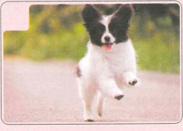
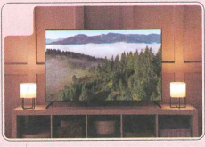
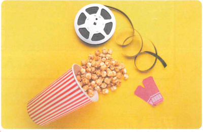
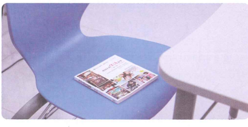
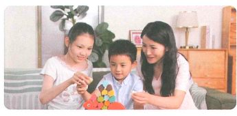
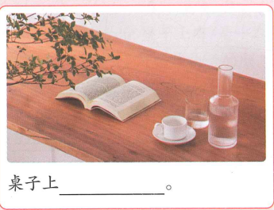
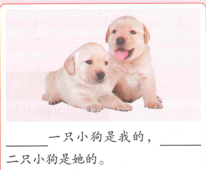

静中寻文
1 / 14
Tiến độ bài học
Wǒ míngtiān shàngwǔ zài xuéxiào xuéxí
我明天上午在学校学习
Sáng mai mình học ở trường
Học theo từng cụm nhỏ: từ mới → ngữ cảnh → ngữ pháp → luyện tập.
0
Khởi động
Nhìn hình và chọn từ phù hợp.

🐶 Đây là gì?

📺 Đây là gì?
📚 Hoạt động phù hợp?
1
Cụm 1 · Từ vựng
5 từ đầu tiên trước Bài khóa 1.
前边边家那个外边
1
Bài khóa 1 · 约看电影
李文
学校前边有一家电影院。
Xuéxiào qiánbian yǒu yì jiā diànyǐngyuàn.
Phía trước trường học có một rạp chiếu phim.
白家月
对。我们晚上去那个电影院看电影吧。
Duì. Wǒmen wǎnshang qù nàge diànyǐngyuàn kàn diànyǐng ba.
Đúng vậy. Tối chúng mình đến rạp đó xem phim nhé.
李文
好！我们七点在电影院外边见，好吗？
Hǎo! Wǒmen qī diǎn zài diànyǐngyuàn wàibian jiàn, hǎo ma?
Được! Chúng mình gặp lúc 7 giờ bên ngoài rạp, được không?
白家月
好的，晚上七点见！
Hǎo de, wǎnshang qī diǎn jiàn!
Được, tối 7 giờ gặp nhé!
Tiểu Ngữ giúp sức: 前边 có thể nói 前边儿; 那个 trong khẩu ngữ đôi khi đọc gần như “nèige”.

Role-play
Hai người hẹn nhau đi xem phim: thay đổi thời gian và địa điểm gặp.
1
Ngữ pháp 1 · Câu tồn hiện + trật tự thời gian/nơi chốn
1. Câu tồn hiện
Nơi chốn + 有 / 是 + người/sự vật
学校前边有一家电影院。
电影院前边是一家超市。
桌子上没有小猫。
2. Thời gian đứng trước nơi chốn
Chủ ngữ + Thời gian + 在 + Nơi chốn + Động từ
我们七点在电影院外边见。
安妮下午在家里学中文。
陈天中明天中午在学校吃午饭。
✏️ Luyện nhanh
Chọn câu đúng:
2
Cụm 2 · Từ vựng
7 từ trước phần nghe Bài khóa 2.
椅子上本书那第学习
2
Nghe trước Bài khóa 2
🎧 Nghe hội thoại hai lượt rồi chọn đáp án đúng
（1）椅子上有（ ）。
（2）这是陈天中的（ ）中文书。
2
Bài khóa 2 · 椅子上的书
白家月
椅子上有一本中文书，那是谁的书？
Yǐzi shàng yǒu yì běn Zhōngwén shū, nà shì shéi de shū?
Có một quyển sách tiếng Trung ở trên ghế. Đó là sách của ai?
陈天中
是我的书，谢谢。这是我的第二本中文书。
Shì wǒ de shū, xièxie. Zhè shì wǒ de dì-èr běn Zhōngwén shū.
Là sách của mình, cảm ơn bạn. Đây là quyển sách tiếng Trung thứ hai của mình.
白家月
不客气。你明天上午在哪儿？
Bú kèqi. Nǐ míngtiān shàngwǔ zài nǎr?
Đừng khách sáo. Sáng mai bạn ở đâu?
陈天中
我明天上午在学校学习。
Wǒ míngtiān shàngwǔ zài xuéxiào xuéxí.
Sáng mai mình học ở trường.
Đọc hiểu: ① 椅子上的书是谁的？ ② 陈天中明天上午在哪儿学习？

Tiểu Ngữ giúp sức: 上 sau danh từ như 椅子上、书上 đọc nhẹ; khi biểu thị thứ tự/thời gian như 上午 thì đọc shàng.
2
Ngữ pháp 2 · 第 biểu thị số thứ tự
Cấu trúc
第 + số từ
第一 · 第二 · 第三
第 + số từ + lượng từ + danh từ
第一个学生 · 第一本书
Nghe mẫu
✏️ Luyện nhanh
“quyển sách thứ hai” →
3
Cụm 3 · Từ vựng
11 từ cuối trước Bài khóa 3.
做白天读书和朋友唱歌好听电视狗玩
3
Nghe trước Bài khóa 3
🎧 Nghe hội thoại hai lượt rồi chọn đáp án đúng
（1）杨同乐唱歌（ ）。
（2）王一雪家有一只（ ）。
3
Bài khóa 3 · 星期六做什么
王一雪
明天星期六，你做什么？
Míngtiān Xīngqīliù, nǐ zuò shénme?
Mai là thứ Bảy rồi, em định làm gì?
杨同乐
我白天在家里读书，晚上和朋友们去外边唱歌。
Wǒ báitiān zài jiālǐ dúshū, wǎnshang hé péngyoumen qù wàibian chànggē.
Ban ngày em đọc sách ở nhà, buổi tối ra ngoài hát với bạn bè.
王一雪
你唱歌很好听。
Nǐ chànggē hěn hǎotīng.
Em hát rất hay.
杨同乐
谢谢！您星期六做什么？
Xièxie! Nín Xīngqīliù zuò shénme?
Cảm ơn chị! Thứ Bảy chị làm gì?
王一雪
我在家里做饭、看电视，和孩子们、小狗玩。
Wǒ zài jiālǐ zuòfàn, kàn diànshì, hé háizimen, xiǎogǒu wán.
Chị ở nhà nấu ăn, xem ti vi, chơi với các con và chú chó nhỏ.
杨同乐
我也有一只小狗。
Wǒ yě yǒu yì zhī xiǎogǒu.
Em cũng có một chú chó nhỏ.
Đọc hiểu: ① 杨同乐星期六做什么？ ② 王一雪星期六做什么？

Tiểu Ngữ giúp sức: 玩 trong khẩu ngữ thường thêm âm uốn lưỡi, có thể đọc là 玩儿.
✏️ Luyện tập tổng hợp
Ôn lại từ vựng và ba điểm ngôn ngữ chính.
1. ______ 上有一只小猫。
2. 她 ______ 在家里学习。
3. 王一雪：你唱歌很 ______ 。
4. 陈天中：你下午去哪儿？ 安妮：我下午还 ______ 上课。

5. 桌子上 ______ 。

6. ______ 一只小狗是我的，______ 二只小狗是她的。
✅ Tổng kết
Bài 9 đã hoàn thành
- 23 từ mới, chia thành 3 cụm.
- 3 bài khóa theo tiến trình giáo trình.
- 2 phần nghe trước Bài khóa 2 và 3.
- Câu tồn hiện với 有 / 是.
- Thời gian đứng trước từ ngữ chỉ nơi chốn khi cùng làm trạng ngữ.
- 第 dùng để biểu thị số thứ tự.
Điểm luyện tập tổng hợp
0/6
Chỉ tính 6 câu ở phần luyện tập tổng hợp.
静中寻文 · jingzhongxunwen